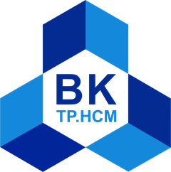

01Tabular
Tabular
intelligence
From missing values to meaningful patterns, we investigate what structured data is trying to say.
Project page ↗
Trường Đại học Bách Khoa – ĐHQG TP.HCMHo Chi Minh City University of TechnologyProgramming Foundations for Data Analysis and Visualization
Group G3 / Tabular · Text · Time series
Group G3 explores how data becomes insight through analysis, visualization, and machine learning.
We are a student research group working across tabular, text, and time-series data. Our work follows the complete path: collect, clean, understand, model, and communicate.
// The goal is not to make data look complex.
// The goal is to make complexity useful.
Three lenses.
One shared method.
From missing values to meaningful patterns, we investigate what structured data is trying to say.
Project page ↗We turn language into measurable features, then ask what the model understands and misses.
Project page ↗We forecast Hanoi's temperature days ahead, and measure when the past stops telling us about tomorrow.
Project page ↗* Each project page shows its full notebook, the PDF report and the video.
Every project is built to be reproducible, explainable, and ready to run end-to-end in Google Colab.
Ask what the dataset contains, and what it leaves out.
Clean, encode, scale, and split without losing the plot.
Test baselines, models, and the assumptions behind them.
Show the evidence, the limitations, and the next question.
Built with curiosity, precision, and a healthy respect for messy data.
Course project / HCMUT